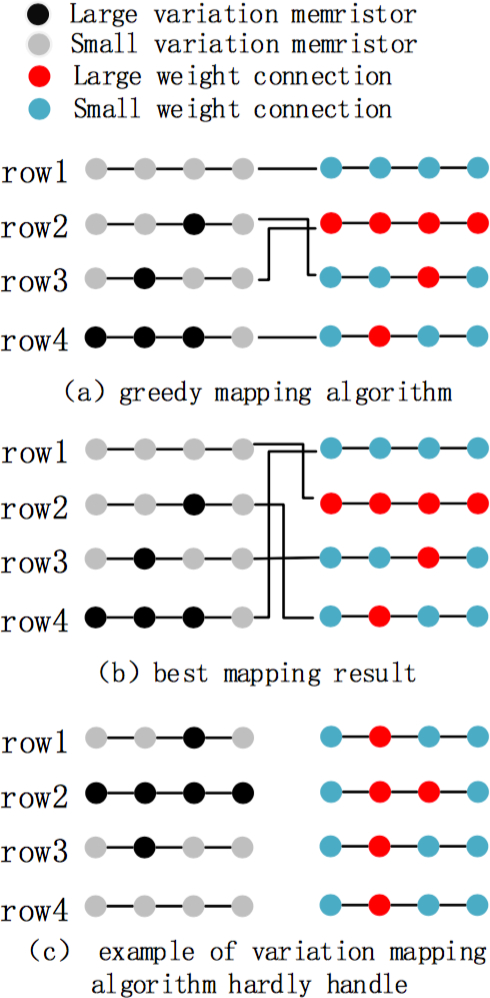
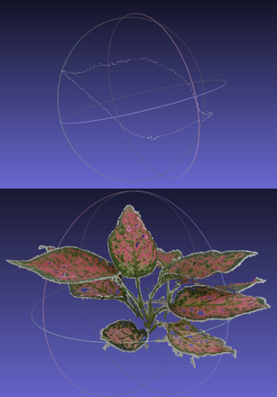
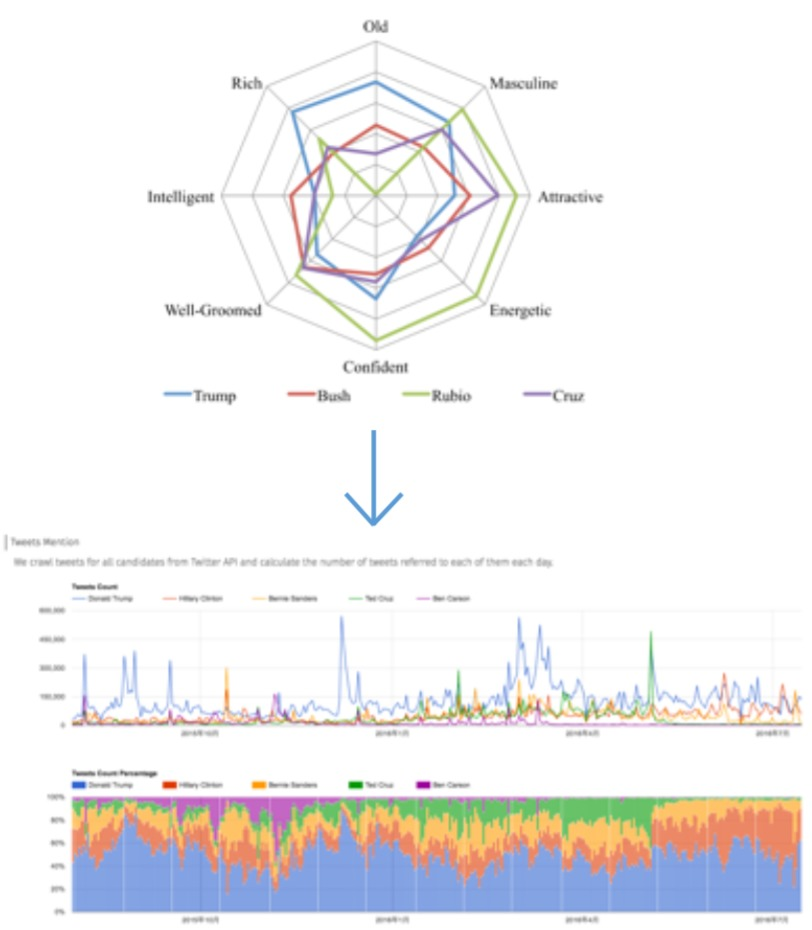
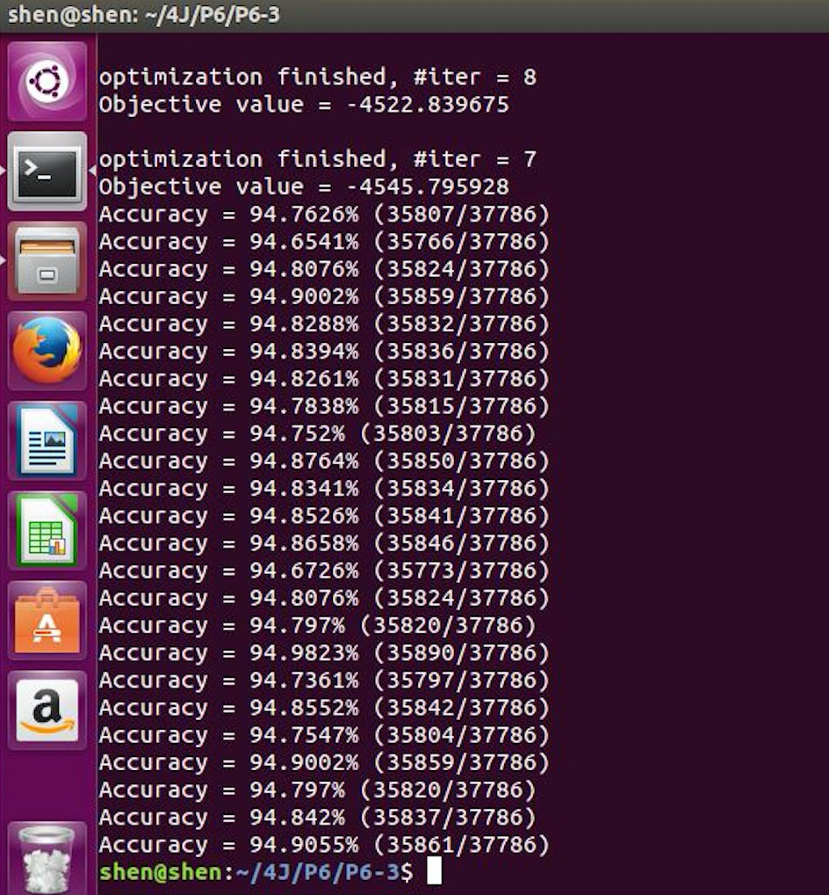
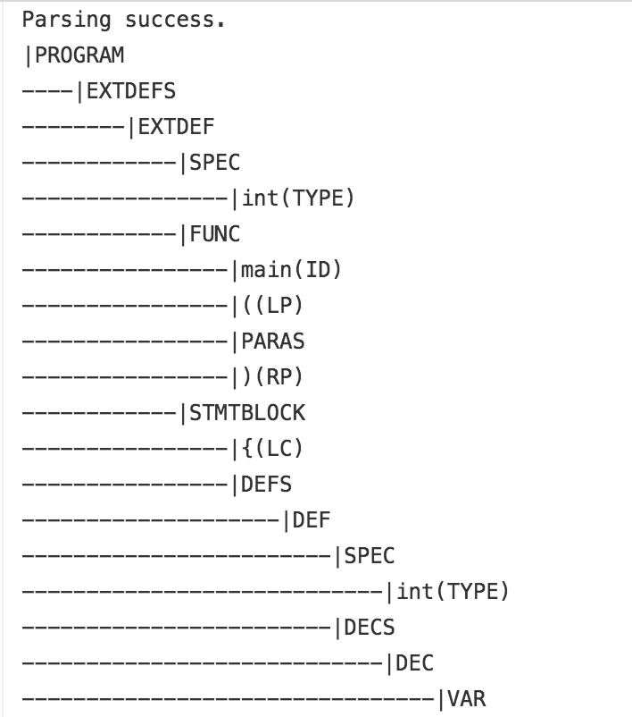
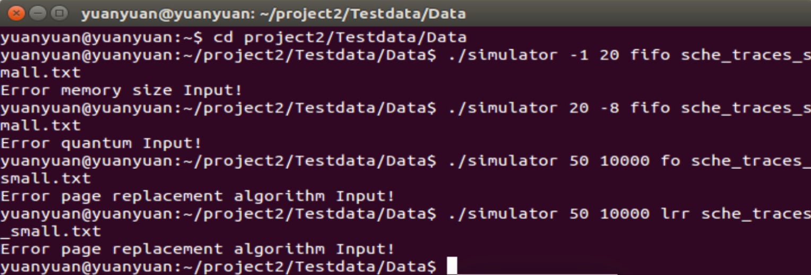
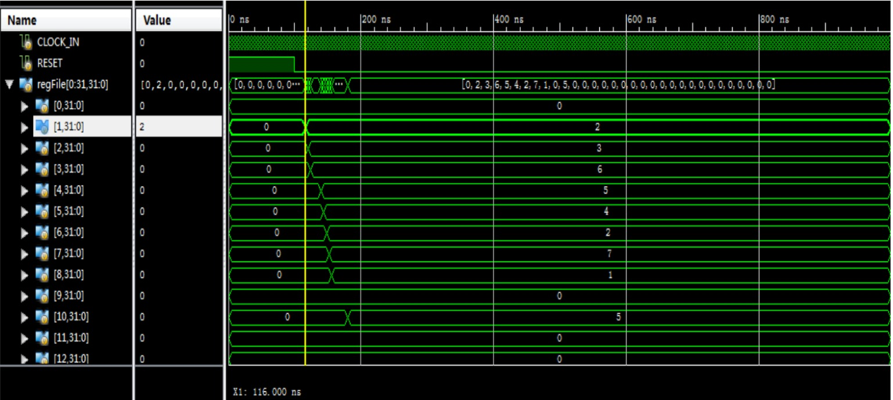

JIYUAN SHEN

Senior Student
Computer Science Department
Shanghai JiaoTong University
Email: jiyuansmile@gmail.com shenjiyuan@sjtu.edu.cn v-jiyshe@microsoft.com
JIYUAN SHEN |
|
Senior Student |
Microsoft Research Asia
Sep. 2016 - Present, Group of System
Research Intern @ Systems Research Group
Advisor: Principal Researcher Lintao Zhang
Field: Audio - Natual Language Processing (mainly Neural Network)
University of California Los Angeles
Jun. 2016 - Sep. 2016, Department of Computer Science
Exchange Student & Research Intern @ Center for Vision, Cognition, Learning, and Autonomy
Advisor: Prof. Song-Chun Zhu
Field: Image, Social Media - Data Visualization and Mining
Advanced Computer Architecture Laboratory
Aug. 2015 - Jul. 2017, Department of Computer Science and Engineering
Research Assistant @ Advanced Computer Architecture Institute
Advisor: Prof. Xiaoyao Liang and Prof. Li Jiang
Field: Neural network; 3D Reconstruction - Neural Network and Pattern Recognition.
Visual Media and Data Management Lab
Oct. 2015 - Feb. 2016, Department of Computer Science and Engineering
Research Assistant @ Visual Media and Data Management Lab
Advisor: Prof. Bin Sheng
Field: 3D Reconstruction - Pattern Recognition
China Mobile
Jun. 2014 - Aug. 2014, Department of Internet
Intern @ China Mobile - Hunan
Advisor: Chief. Wanzheng Bao
[1] L. Chen, J. Li, J. Shen and L. Jiang, "Learning Variations and Defects: a Neural-network Retraining Method for Fault Tolerance in the RRAM Crossbar" Design, Automation and Test in Europe (DATE) 2017. (submitted)
• Designed redundancy combined with ”Kuhn-Munkres” mapping method applied to the model of variation on memristors given by Vortex(DAC15) where features include normal distribution, random presence and weight-error relations instead of hardware RRAM Crossbar computings
• Implemented Redundancy-Mapping on the standard 784 × 10 Mnist Data Set (20 − 30% advanced)
• Analyzed the relationship of topology and mapping and improvements of Redundancy-Mapping
[2] J. Shen, X. Yang and Z. Fan, "3D Reconstruction of Plant Leaves from Rough Multi-Photos" IEEE Winter Conference on Applications of Computer Vision(WACV) 2017. (submitted)
• Designed the Filtering Feature Sequence as KNN ratio test, symmetry test and RANSAC after SURF
• Designed Surface-Stereo Lookup Table that stores current frame plane coordinates with its accordingly triangle three-dimensional coordinates for tracking processing iterations
• Implemented the three-dimensional reconstruction on random reddish-green Epipremnum aureum
|  |
Neural-network Retraining for Fault Tolerance(2016) RRAM Crossbar suffers various defects and variation, resulting in dramatic degradation of the yield and computation accuracy. Hardware based solutions cause large overhead and power consumption. The previous software based solution, however, cannot deal with stuck-at faults and is less efficient in large variations. We leverage the inherent sparse weight-matrix and self-tuning capability of the neural network to avoid assigning the large value weight to the memristor with defects and high variance. We explore the self-healing of the neural-network to enlarge the solution space of finding the fault tolerable weight-memristor mappings. To train the neural-network, in this paper, we apply the conven- tional back-propagation method that utilizes the gradient descent technique. To show our retraining process with fixed weight, we use a simple two-layer fully connect neural-network as an example. |
|  |
Leaf Three-dimensional Reconstruction with Multi-Photos(2015) We first introduce feature detection sequence as KNN ratio test, symmetry test and RANSAC after basic SURF feature detection to get the most robust feature detector. A BruteForceMatcher obtains two nearest neighbors through comparing the descriptors that removes bad matches then further checked by DMatches to delete all non-symmetrical matches. Finally RANSAC returns the fundamental matrix. Experiments show 30 matches for threshold would be promising. We also introduce Lookup Table that stores 2D coordinates of current frame and its triangled 3D coordinates, then by keeping track of 2D-3D pair during each iteration of processing new frames we can minimizes projection errors. We quantify the effect of generated contour by fine points and observation. Experiments on real-world datasets show effectiveness of our algorithm and improvements. |
|  |
Tracking the US presidential elections(2016) [Viz] We track statistics both from texts and graphs by utilizing the hierarchical And-Or Graph to jointly represent the latent structure. New topics are detected through a cluster sampling process for which we adopted Swendsen-Wang Cuts for tracking. We generate topic trajectories to show how topics emerge, evolve and disappear over time. Experiments shown on both a public dataset Reuters-21578 and a self-collected dataset named UCLA Broadcast News Dataset. Results show that this method can explicitly describe the textual and visual data in news videos and produce meaningful topic trajectories. |
|  |
Patent Section 2-Classification (2016) [Github] To solve patent classification problem with a subset of Japanese patents and the 2 classes assumption. First I use Liblinear and minmax to make classifications, and results are shown as p1-p5. Then we implemented a base classifier (SVM polynomial kernel) by making few changes on liblinear source codes. Performance are measured based accuracy, time, TP, FP, TN, FN, TPR, FPR, ROC values. |
|
Secure TCP UDP Protocol Implementation (2016) [Github] This project includes two applications for file-sharing which differs in the communicating protocol. 'tcp' directory are codes implementing the tcp protocol for file sharing between two hosts. 'udp+rdt3.0' directory are codes implementing unreliable udp protocol plus reliable tricks that rdt3.0 defines for file sharing between two hosts. |
|
Smart Vehicle and Android Control System (2015) [Github] To develop a control system on smart vehcle and android application for real-time control. Mini-car follows instructions controlled by android application and poses corresponding actions at real-time, including button, gravity, gesture, voice control and real-time video returning. The implementing includes android programming, UI application design, reai-time video returning and single chip side programming. |
|  |
Simplified C Language Compiler (2015) [Github] (Class Award 2/74)
To design and implement a simplified compiler for a given programming language, namely SMALLC, which is a simplified C-liked language. Designed a lexical analyzer, which reads source codes and separates them into tokens. Performed syntax analysis using Yacc. Performed semantic analysis and syntactic checking after generating a parse tree. Translated the intermediate code into target machine language LLVM Assembly. Implemented LLVM Assembly (outcomes) can be normally run on ubuntu operating system. |
|  |
Unix-style File System Inplementation (2014) [Github] Designed and implemented a basic disk-like secondary storage server. Designed and implemented a inode-based file system to act as a client using the disk services provided by the server. Utilized the socket API to enable communication between the server and the file system. It reads in a set of data files specifying the scheduling and memory access behavior of programs, and will simulate the paging process of those programs. |
|
Smart Vehicle Tracking and Identifying Control System (2014) [Github] To develop a control system on smart vehcle. Mini-car automatically plays maze games where straight lines involved. That is it dynamically correct the direction of the vehcle and realize the automatic playing. The implementing includes video streaming process, image pattern recognition and single-chip microcomputer controls which are distibuted into the computer and the single-chip. |
|  |
Advanced MIPS CPU Simulator with Multi-Cycle/Pipeline (2014) [Github] Actually this project includes four components with different difficulty. To develop MIPS CPU simulators with multi-cycle and pipeline.The simulator is constructed by using xilinx spartan 3e software and verilog language. (Reports are really detailed in implementing and principles. They are written by me two years ago, and I was not intended for putting in a way like github, which makes them all explained in Chinese.) |
|
Python Game Design (2013) [Github] To develop a computer game based on Python. The implementing includes the main game code design and human-computer interaction design. You can check the video about the simple air-attack alike game. The game poses basic game functions and provides real-time game record information. |
(2016) get started with linux kernel. The document includes five parts: how to compile the Linux Kernel; module programing; process management (schedule records in times of process); memory management (a module create a proc file system which accepts 3 commands inputs); file system (study romfs including hide, encrypt and modify permission of files). [Github] [Tutorial]
(2014) simple linux C codes for getting started. All codes were written when I was studying Operating System Class in SJTU including file copy, shell-like programing, threading and IPC problem implementations (BurgerBuddyProblem). [Github]
(2016) get started with Twitter REST API and Google Map API (similar to scrawler implementations). Here you will follow my steps including get one user's followers' id, their profile, image and location. Check if the locations are in US by Google Map. Count number of common followers of two users.[Tutorial][Github]
(2016) get started with 3 multiprocessing tools (openmp, hadoop and pthread). The corresponding questions are (1) openmp and hadoop - matrix multipication; (2) pthread - there are four threads (thread 1 output 1, thread 2 output 2, thread 3 output 3, ...). [Github]
(2015) get started with simple-scalar tool and use it as a method to take cache performance and optimazation study. I make the document when I was studying computer architecture class in SJTU, and I still remember that such materials online are few. The file introduces 'sim-cheetah' and 'sim-outorder' with SPEC95 benchmark 'go'. First, use 'sim-cheetah' as a cache simulator to investigate the set and associativity effects on miss rate. Second, further use 'sim-cheetah' to discuss the cache upon replacement policies (here focus on LRU and MIN algorithm). Third, use 'sim-outorder' to investigate the effects of branch predictors on the execution for the SPEC95 benchmark 'go'. [Tutorial]
Blog: Write for Daily Programmings.
Music: Hulusi - Grade 8 - No.0082012161820 (begin when I was a 10-year little girl)
Novel: Love the classic Chinese novel 红楼梦 (Dream of the Red Chamber, a. k. a. The Story of the Stone).
Sports: Jogging; Tennis; Hiking.
Gold Prize in SICTIC, China, 2011 ; Representative Competitor of Hunan Province in China
Academic Excellence Scholarship (Top 5%), 2014
The Fourth Computer CCF Software Capacity Certification (C++), 2015
Class Commissary in charge of SEIEE-1305 Class Organization, 2013-2017
Secratary in Network Department of SEIEE Student Union, 2013-2015
Athelete in the 45th Sports Meeting of SJTU, 2014
Volunteer in Campus Run, 2015
Volunteer in Shanghai International Marathon, 2014-2015
Vice Group Leader in Summer Social Practice, 2014
Network Leader in Freshman Welcome Dinner, 2014